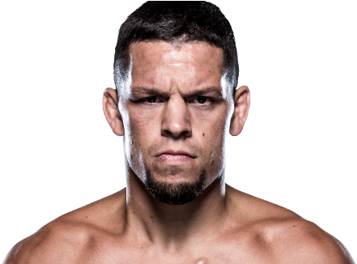

Nate Diaz es un reconocido peleador estadounidense de artes marciales mixtas conocido por su estilo agresivo, su gran resistencia y su fuerte personalidad dentro del octágono. Nació el 16 de abril de 1985 en Stockton, California, Estados Unidos. Desde joven creció en un ambiente difícil junto a su hermano mayor Nick Diaz, quien también se convertiría en un famoso peleador de MMA. Ambos encontraron en las artes marciales una forma de disciplina y superación personal.

Nate Diaz comenzó su carrera profesional en las artes marciales mixtas a mediados de los años 2000. Sin embargo, alcanzó fama mundial cuando participó en el reality show "The Ultimate Fighter", donde demostró un estilo de combate muy particular basado en presión constante, volumen de golpes y una gran habilidad en el suelo. Finalmente ganó el torneo y obtuvo un contrato con la UFC.
A lo largo de su carrera dentro de la Ultimate Fighting Championship se convirtió en uno de los peleadores más populares entre los fanáticos. Su estilo se caracteriza por lanzar grandes combinaciones de boxeo, mantener un ritmo alto durante toda la pelea y utilizar su excelente jiu-jitsu brasileño para finalizar a sus oponentes en el suelo. Además, es conocido por su gran resistencia física y mental, lo que le permite soportar peleas muy duras sin perder intensidad.
Uno de los momentos más importantes de su carrera ocurrió en 2016 cuando enfrentó a Conor McGregor con poco tiempo de preparación. Contra muchos pronósticos, Nate Diaz derrotó al irlandés mediante una sumisión en el segundo asalto, protagonizando una de las mayores sorpresas en la historia de la UFC. Esa pelea lo convirtió en una superestrella internacional.
Con el paso de los años Diaz protagonizó combates memorables contra algunos de los mejores peleadores del mundo. Su actitud desafiante, su estilo auténtico y su mentalidad guerrera lo han convertido en una figura icónica dentro de las artes marciales mixtas modernas.
Durante su carrera ha competido principalmente en dos categorías:
Nate Diaz es famoso por:
Gracias a su mentalidad competitiva, su resistencia legendaria y su autenticidad, Nate Diaz se ha convertido en uno de los peleadores más respetados y reconocidos dentro del MMA moderno.
Otros que podrían interesarte: